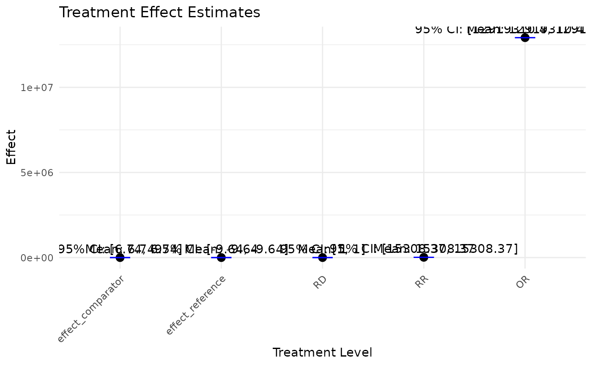

Error bar plots for treatment effects
Value
An error bar plot of the mean effects and their 95% confidence intervals for comparator level, reference level, and ATE.
Examples
testdata <- read.csv(system.file("extdata",
"continuous_outcome_data.csv",
package = "bayesmsm"))
model <- bayesmsm(ymodel = y ~ a_1+a_2,
nvisit = 2,
reference = c(rep(0,2)),
comparator = c(rep(1,2)),
treatment_effect_type = "sq",
family = "gaussian",
data = testdata,
wmean = rep(1, 1000),
nboot = 100,
optim_method = "BFGS",
parallel = FALSE,
ncore = 2)
plot_est_box(model)
